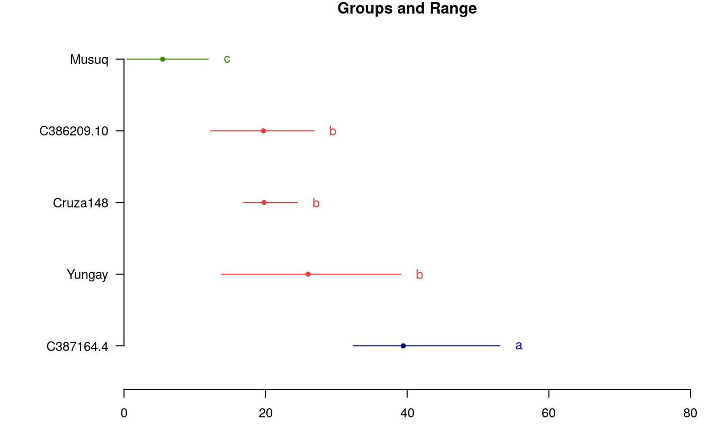
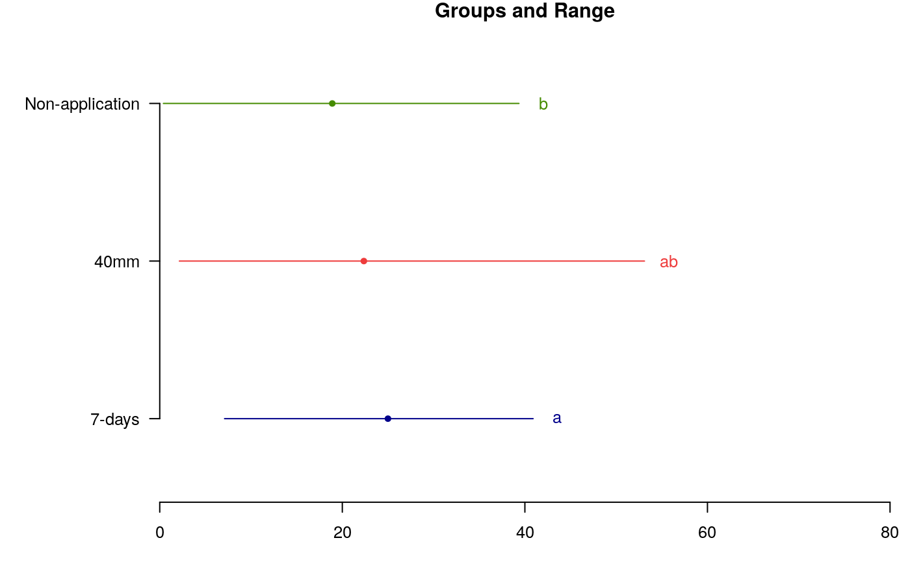

The variance analysis of a strip-plot design is divided into three parts: the horizontal-factor analysis, the vertical-factor analysis, and the interaction analysis.
strip.plot(BLOCK, COL, ROW, Y)
| BLOCK | replications |
|---|---|
| COL | Factor column |
| ROW | Factor row |
| Y | Variable, response |
Data and analysis of the variance of the strip plot design.
The strip-plot design is specifically suited for a two-factor experiment in which the desired precision for measuring the interaction effects between the two factors is higher than that for measuring the main efect two factors
Statistical procedures for agricultural research. Kwanchai A. Gomez, Arturo A. Gomez. Second Edition. 1984.
# Yield library(agricolae) data(huasahuasi) YIELD<-huasahuasi$YIELD market <- YIELD$y1da + YIELD$y2da non_market <- YIELD$y3da yield <- market + non_market model<-with(YIELD,strip.plot(block, clon, trt, yield))#> #> ANALYSIS STRIP PLOT: yield #> Class level information #> #> clon : C387164.4 C386209.10 Cruza148 Yungay Musuq #> trt : 40mm 7-days Non-application #> block : I II III #> #> Number of observations: 45 #> #> model Y: yield ~ block + clon + Ea + trt + Eb + trt:clon + Ec #> #> Analysis of Variance Table #> #> Response: yield #> Df Sum Sq Mean Sq F value Pr(>F) #> block 2 7.5 3.75 0.2139 0.80970 #> clon 4 5435.8 1358.96 36.2754 3.572e-05 *** #> Ea 8 299.7 37.46 2.1343 0.09368 . #> trt 2 280.6 140.32 8.5361 0.03603 * #> Eb 4 65.8 16.44 0.9365 0.46785 #> trt:clon 8 194.1 24.26 1.3821 0.27622 #> Ec 16 280.8 17.55 #> --- #> Signif. codes: 0 ‘***’ 0.001 ‘**’ 0.01 ‘*’ 0.05 ‘.’ 0.1 ‘ ’ 1 #> #> cv(a) = 27.7 %, cv(b) = 18.4 %, cv(c) = 19 %, Mean = 22.08644 #>out1<-with(YIELD,LSD.test(yield,clon,model$gl.a,model$Ea)) oldpar<-par(mar=c(3,8,1,1),cex=0.8) plot(out1,xlim=c(0,80),horiz=TRUE,las=1)#> Warning: NAs introduced by coercion#> Warning: NAs introduced by coercionpar(oldpar)